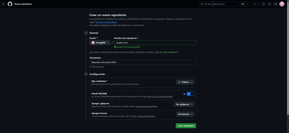
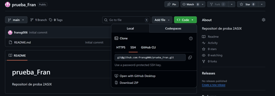
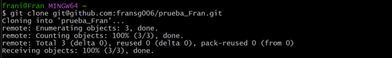
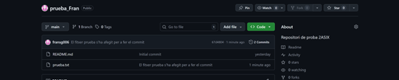
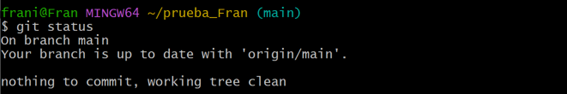

Pràctica de Git i GitHub
Crea un compte a GitHub (Si no el tens!!!).
La forma d’accedir als repositoris remots de GitHub serà per SSH, per tant has de copiar la teua clau pública RSA a GitHub, per això:

Copia el contingut del teu fitxer ~/.ssh/id_rsa.pub, per això: afegeix una nova clau SSH a l’apartat “SSH keys” del teu perfil a GitHub i enganxa el contingut de la teua clau pública.
No disposava d’ell, l’he creat al següent pas
Si no teniu aquest fitxer, podeu generar una nova clau ssh pública seguint les instruccions de l’article Treballant amb claus ssh.

Un cop finalitzat aquest exercici, hauràs de repetir-ho fent ús de tokens.
Després copiem la clau pública per a posteriorment apegar-la a GitHub

En aquesta pagina de GitHub anem a apegar la clau pública, anant on fica New SSH Key


Una vegada fet açò, ja tenim una clau d’autenticació a GitHub

Per a provar que hi ha connexió, amb la següent comanda hem pogut veure l’últim missatge el qual es bon senyal ja que si que ens diu que hi ha autenticació

Crea a GitHub un repositori amb el nom prova_el_teu_nom (inicialitza el repositori amb un fitxer README) i la descripció Repositorio de prueba 2ASIX.

Instal·la git en el teu ordinador (si no el tens instalat!!!).

Configuració de git.
El primer que hauries de fer quan instal·les Git és establir el teu nom d’usuari i adreça de correu electrònic (Assegura’t que les dades són correctes i que has posat el teu nom complet). Això és important perquè les confirmacions de canvis (commits) a Git utilitzen aquesta informació, i és introduïda de manera immutable en els commits que envieu:
Per a fer la configuració de git per comandes vaig a fer-ho de la seguent manera:

Per últim, per a sols comprovar que s’ha desat correctament el nom i el correu que hem introduït, ho fem amb les següents comandes:

Per últim vaig a copiar la URL SSH del repositori per a després clonar-lo de forma local al meu ordinador


Ara vaig a crear un document de proba

Com ja està fet vaig a preparar-lo per a pujar-lo a GitHub

Com ja està pujat, vaig a comprovar-ho a GitHub, com es veu a la següent imatge:

Per a modificar-lo, una vagada he acabat, per a tornar-lo a pujar editat ho faig amb la següent comanda:


Seguidament per a canviar-li el nom:


Per a eliminar el fitxer, ho faig de la següent manera:


I per últim per a comprovar el seu estat, es fa us de la següent comanda:

Busca informació per a crear un nou repositori anomenat prova2_el_teu_nom. En aquesta ocasió, crea primer el repositori local (usant git init) i després cerca informació per sincronitzar-lo i crear el repositori remot a GitHub.
Primer que res, per a crear-lo a Git i després pujar-lo a GitHub s’ha de crear un directori i després dins d’ell fer un git init

Ara mateix el repositori està creat però falta crear documents que crearem seguidament per a poder fer un commit. Primer faré el README.md.

Després des de GitHub he d’anar a New Repository, i simplement ficant el nom que havíem creat abans ja estaria. Una vegada fet, ens apareix el següent per a connectar-lo al respositori local.

Eixos comandaments son els que he d’emprar per tal de que els respositoris estiguen connectats. Copiant i pegant els comandaments anteriors a Git ja ho fa automàticament.